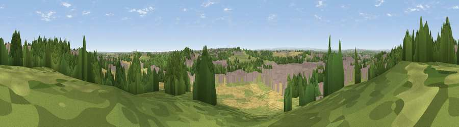

Viewpoint near Castleford
#24095 in England · top 38% of its area beats it · near CastlefordWhere it is
The exact computed spot (SE 44475 24375). Click the marker for map links.
The view, rendered

A 360° render of this exact spot computed from the terrain model, tree cover and land cover — summer colours, afternoon light, calibrated against photographs of famous viewpoints. Real trees, hedges and buildings will differ in detail.
The panorama
Grey silhouette: terrain skyline in each direction (720 bearings, Earth curvature and refraction included). Dashed green: skyline with trees (+15 m) and buildings (+8 m) as obstacles. Blue strip: how far the ground is visible on each bearing.
Where the view opens
Wedge length = distance to the farthest visible ground on that bearing (vegetation-aware). Rings at 10, 25 and 50 km.
What fills the view
30% built-up · 26% woodland · 22% grassland · 21% cropland ·
Angular shares of the visible panorama (visual magnitude), not map area. Landscape diversity 0.62 (0–1 Shannon).
Key numbers
More beautiful places nearby
The staircase of upgrades: each row has a higher view potential than everything closer. Driving times are estimates from straight-line distance, calibrated against real road routing — check an actual route before setting out.
| Place | Direction | Drive | Score |
|---|---|---|---|
| Viewpoint near Castleford | NNW · 1 km | ~4 min | 52.0 |
| Prince of Wales Colliery Tip | SSE · 1 km | ~4 min | 61.4 |
| Viewpoint near Micklefield | N · 8 km | ~16 min | 65.7 |
| Viewpoint near Woolley | SW · 17 km | ~30 min | 67.9 |
| Viewpoint near Grange Moor | WSW · 23 km | ~38 min | 69.8 |
| Viewpoint near Hoylandswaine | SW · 27 km | ~43 min | 72.7 |
| Rawdon Billing | NW · 27 km | ~44 min | 73.0 |
| Viewpoint near Green Moor | SSW · 30 km | ~47 min | 73.1 |
53.71391, -1.32761 · source: screening · position refined by local search. Computed location — check access rights before visiting.